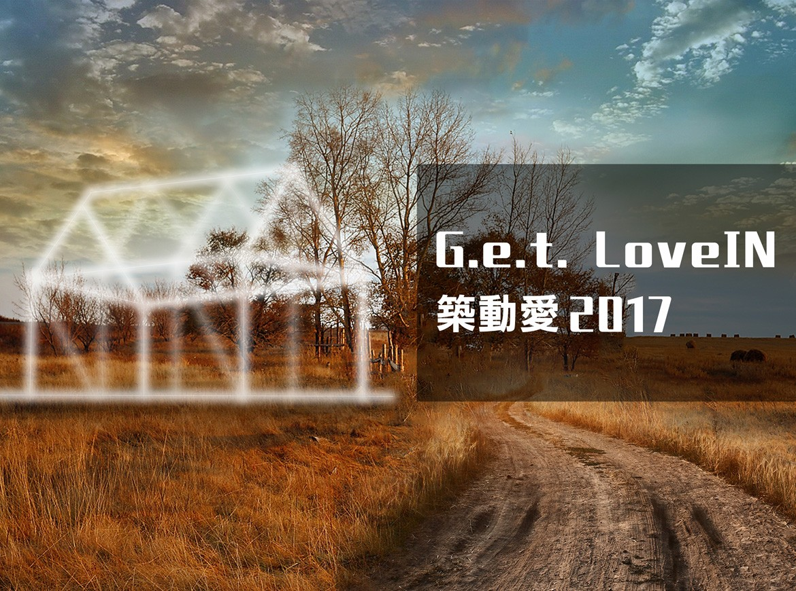
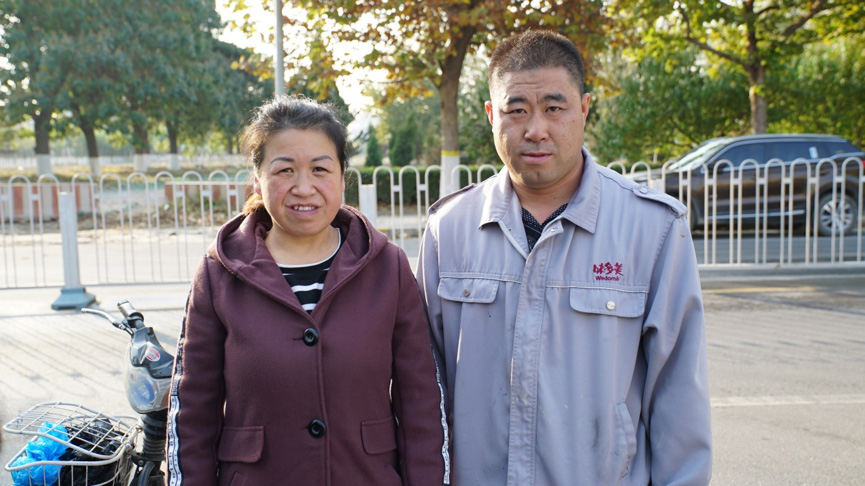
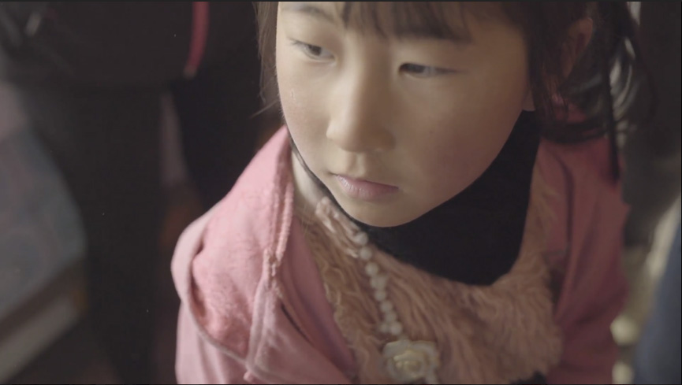
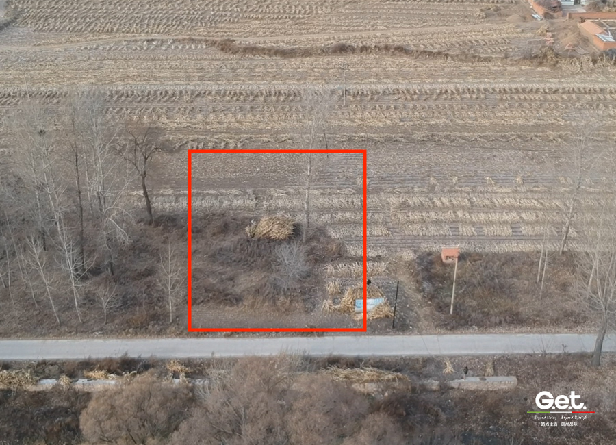
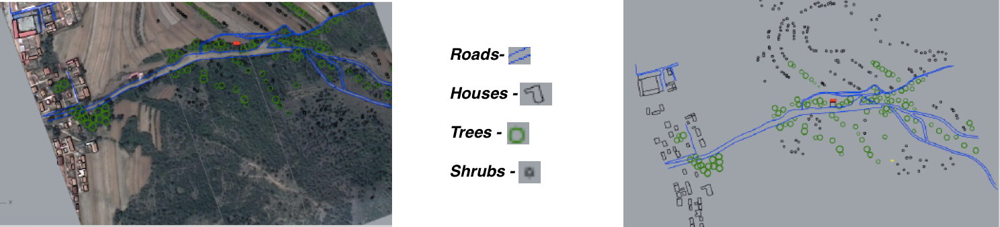
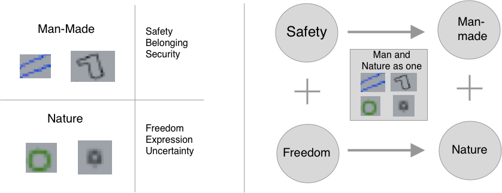
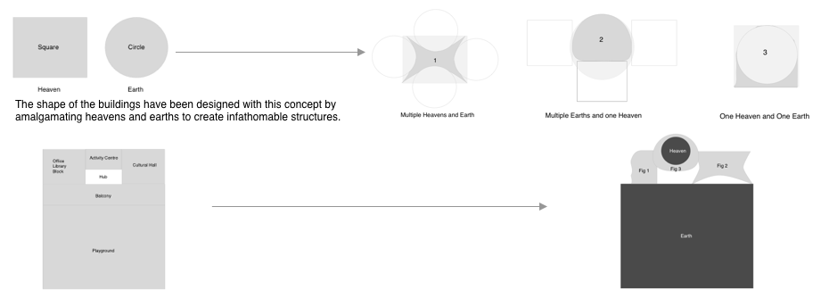
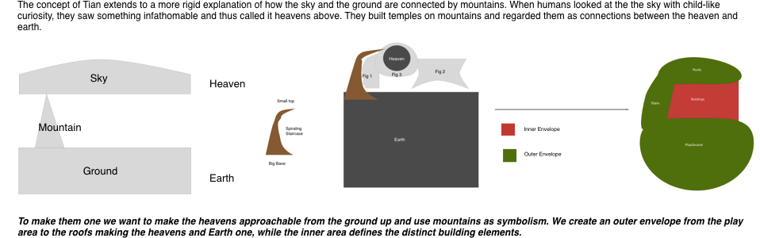
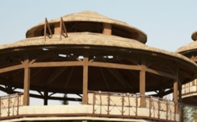
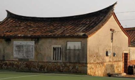

About Project.
This project was part of the course IIMT3624 : Design Studio . We were tasked to design the architecture for a child care center based in Maozishan village in China as per the guidelines of the GetLoveIn compeition. The motive behind the project was not to come up with the best design but to put design thinking into practice by exploring new fields and opportunities. Time duration for the project was 4 weeks.
My Role
The team consisted of 4 classmates taking the course with me having backgrounds in History, Psychology and Finance. There were no trained architects in our team thus the challenge was to design a solution according to our interpretation and style using the design thinking process. While we worked on the overall concept together, my individual job was to develop the concept for the outer envelope of the building.


Maozishan is a Taoist village in Northern China where 80% of the population is migrant workers who work in the big cities and return to the village only for 3 weeks in a year to spend time with their families. In this social scenario, children are usually left uncared for and the necessary interaction with parents is not provided for these children to grow. They are bullied in school and grow up underconfident and shy in the prevailing circumstances of the region. The child care center is supposed to be a place of solace for these children where they can go after-school and feel like they are part of a community.
Site Survey

The construction site is faraway from the village in the mountainous region of the Pingguan county.
The area of Maozishan has a semi humid climate with harsh winters and bright humid summers, the sunshine varies from high in summers to low in winters.

Design Concept
A child care center should not be a tutorial centre, nor should it be a preschool. In the context of rural China, we concluded that parents want two things for their children — learning and being cared for. Thus one of our major aims was to give the children a sense of security and comfort along with the freedom to explore themselves and the surrounding. Borrowing from the ideas of Frank Lloyd Wright, we sought to create a building that blends with the landscape of rural China.

Leftover children in China are alone, quiet, afraid, bullied and unable to express themselves. We want them to Fa Hui (!!). Fa Hui is not fuzzy self-expression, it is expression through talent, either the arts or physical movement.

The hub, the center of the design, is connected to the activity room, because it serves as a blank slate for a variety of classes and forms of expression. It is an open area connected to the outside garden and follows our concept of integrating the landscape
The cultural activity room is a public area where community based events will be held. We extend the idea of integration to their social lives. The integration of a community is crucial to empowerment. Self-actualization can be achieved only when basic needs of safety and connectedness are fulfilled. In the long run, we aim to create a landmark that the leftover children can call their second home.
Building Envelope
In reference to the Taoist traditions the village follows, Tiān (the celestial aspect of the cosmos,[1] often translated as "Heaven") is mentioned in relationship to its complementary aspect of Dì (地, often translated as "Earth"). These two aspects of Daoist cosmology are representative of the dualistic nature of Taoism. In the dense city structure of the city, children cannot see the buildings whole while the site context of the building allows a full view; thus the envelope needs to follow a distinct style that makes the building unique. We extend the concept of man and nature(heaven) by tying different amalgamations of heaven and earth as symbolic representations.
 

The middle dome acts as a 360 degree observation area. It allows the children to look all around and be one with the surroundings. While the circular design allows for congregation and fun activities for a small group of children
The designated building is the Cultural Hall, thus the swallowtail roofs give the building a grand appeal and a special status. Upward curve at the edge of the eaves maximizes sunlight entering the building when the sun is in the southern sky during winter and maximizes the shaded area when the sun is more directly overhead in the summer.
